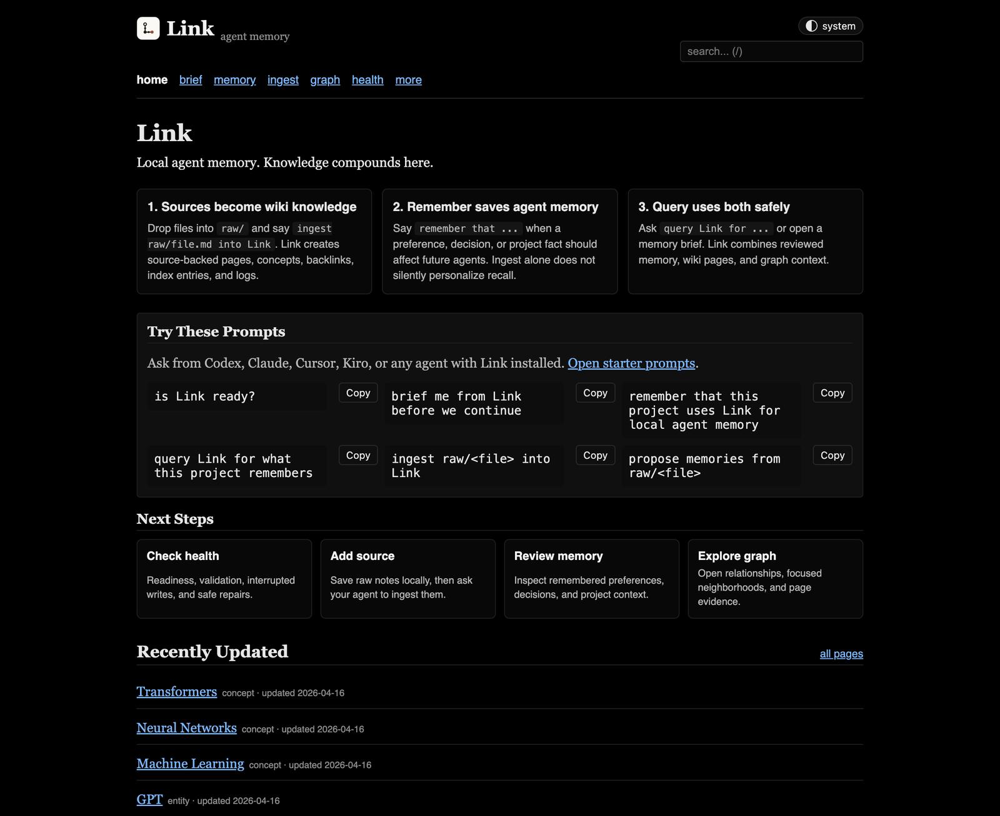
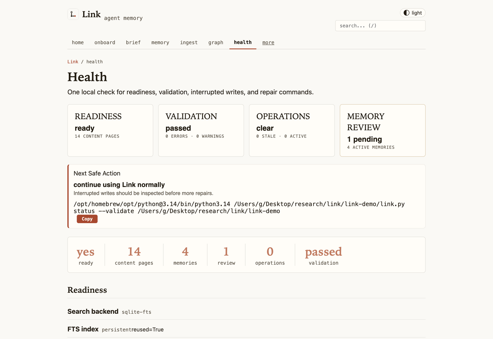
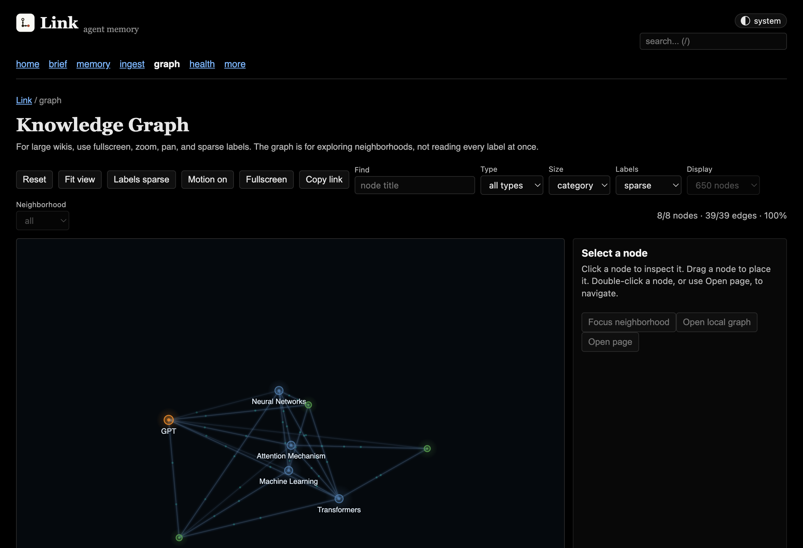

1. Capture
Drop notes, transcripts, screenshots, docs, and decisions into raw/.
Link turns raw notes and project context into source-backed Markdown memory that Codex, Claude, Cursor, Kiro, VS Code, Copilot, Antigravity, and local agents can recall through CLI, MCP, skills, or the local viewer.
The wiki is inspectable storage. The product is durable local memory that agents can recall without dumping the whole folder into a prompt.
Drop notes, transcripts, screenshots, docs, and decisions into raw/.
Agents compile sources into Markdown pages with citations, backlinks, summaries, and graph links.
Only explicit "remember this" requests become durable memory, with review, archive, forget, and audit paths.

brew install gowtham0992/link/link
lnk try
lnk serve link-demois Link ready?
start with Link before we continue
what does Link remember about this project?Windows, source checkout, MCP-only, and skill-first installs are in the First 10 Minutes guide.
Run lnk health, lnk start, lnk query, lnk remember, and backup/repair workflows from any terminal.
The slim MCP surface gives agents one obvious recall tool, one write tool, ingest, review, status, and admin escape hatches.
Official skills let CLI-first agents lazy-load Link workflows without MCP setup or a running web viewer.

Browse source-backed pages, recent updates, and the daily prompt loop.

Readiness, validation, interrupted writes, and repair commands in one place.

Large wikis open as bounded overviews with search, filters, neighborhoods, and explicit all-data loading.